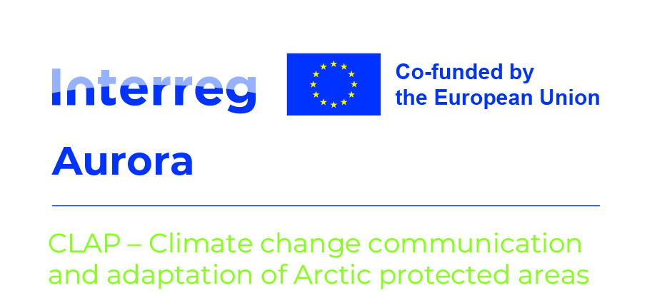

Climate futures for Pasvik Nature Reserve

Choose a metric to see the three-model time series.
Data, calculations and map selection
The supplied archive contains a 1970–1990 baseline and three future windows. Map values and status boxes show each model’s future-minus-baseline change; percentage metrics use 100 × (future − baseline) / baseline. Park averages are unweighted averages of valid grid cells. Click the map for a single grid cell, or enter coordinates below.
The time-series lines share the multi-model baseline, then add each model’s change. Low, Mid and High are the original app’s labels for the CNRM, ICHEC and IPSL model cases. The archive does not establish three separate emissions pathways. The traffic-light thresholds are the original app’s screening rules; a SAFE label is not a guarantee of safety. “Source reference (2025)” preserves the original chart’s reference year.
Seasonal-band selection is consistent between the map, status boxes and time series in this browser version. The original thresholds and climate inputs have been retained.